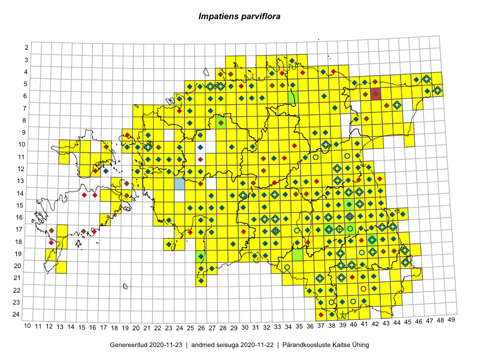

Impatiens parviflora
Uuendatud: 2016-12-02
Kaardile koondatud taksonid: Impatiens parviflora DC.

Kaart põhineb 823 vaatlusel. Taksonit on leitud 410 ruudust.
Kuvatud viited 20 esimesele andmebaasikirjele, ülejäänud PlutoFis
- Malle Leht: 2015-07-09: : ala
- Thea Kull: 2015-07-07: 16-40: ala
- Rein Kalamees: 2015-06-08: 05-32: ala
- Peedu Saar, Liina Oja: 2015-05-20: 18-27: ala
- Malle Leht: 2015-08-02: : ala
- Peedu Saar, Liina Oja: 2015-05-15: 16-23: ala
- Peedu Saar, Liina Oja: 2015-05-21: 16-25: ala
- Peedu Saar, Liina Oja: 2015-05-20: 18-26: ala
- Toomas Kukk, Peedu Saar: 2014-09-25: 07-42: ala
- Toomas Kukk, Peedu Saar: 2014-09-23: 06-42: ala
- Toomas Kukk, Peedu Saar: 2014-09-24: 06-41: ala
- Peedu Saar, Toomas Kukk: 2015-05-26: 10-17: ala
- Rein Kalamees, Kersti Püssa: 2015-08-31: 04-32: ala
- Rein Kalamees, Kersti Püssa: 2015-09-06: 03-32: ala
- Rein Kalamees, Kersti Püssa: 2015-08-04: 03-33: ala
- Rein Kalamees, Kersti Püssa: 2015-08-09: 05-31: ala
- Tiit Hallikma, Toomas Kukk: 2015-07-21: 05-45: ala
- Rein Kalamees: 2015-08-09: 05-31: ala
- Rein Kalamees: 2015-08-09: 05-31: GPS punkt
- Rein Kalamees, Kersti Püssa: 2015-09-02: 03-36: ala